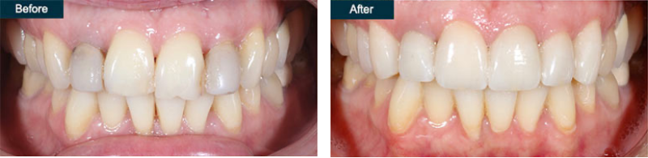
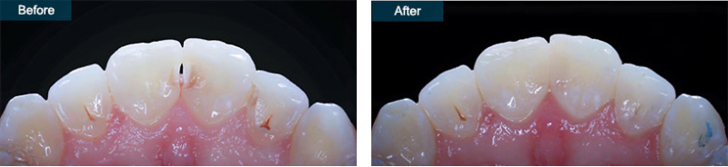
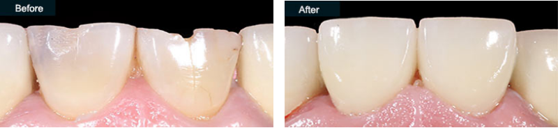
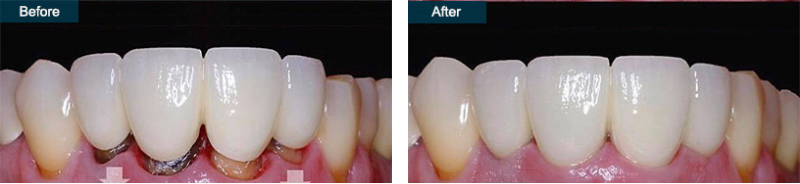
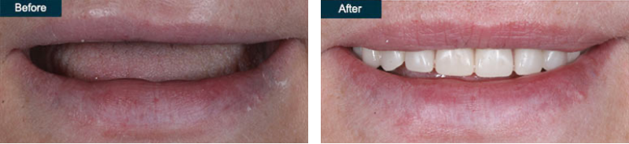

2148 Ocean Ave, Ste 401 Brooklyn, NY 1122
t’s quick to dismiss cosmetic dentistry as a strictly academic discipline. The best cosmetic dentistry is a dynamic combination of science and artistic
talent that relies on advanced technologies. There are some fantastic cosmetic dentists out there, such as Dr. Alex & Igor Khabensky, DDS, who have the vision to create beautiful smiles.
Limited artistic ability may not be a problem if you only require minor modifications to your teeth, for example, perhaps a porcelain crown or veneer. It is more important to choose the best cosmetic dentist with a genuine artistic ability if you consider cosmetic dental procedures such as a complete smile makeover.
Like most people, you visit the best-rated dental expert because you want to improve your appearance and expect the highest quality. That’s what the best cosmetic dentists do, after all. Investing in a smile makeover is easy and effective when you have the best-rated cosmetic dentist at your disposal.
Cosmetic dentistry is not the only service offered at Family Cosmetic & Implant Dentistry. As board-certified dentists, Alex and Igor Khabensky DDS provide services in:

Natasha S.
Had the BEST experience ever! Everyone is Amazimg, Oksana was the BEST! The ladies at the front desk. Dr. Alari was also Amazing! Never thought I would say I had a great experience at the dentist! Overall great experience!

Rachel R.
The office is very nice and tidy and the seating adheres to social distancing rules. All staff wore masks. The people working at the front desk were diligent and quick to provide me with my paperwork as well as answer any questions I had. Dr. Khabensky made me feel very comfortable and worked attentively and expertly. He was also very knowledgeable and quick to calm any concerns I had.

Lex
Oh how I love Quentin Smile Dental. It’s clean, and everyone is very friendly. Not to mention my dentist, Dr. Igor is very smart, knowledgeable and uses new techniques and technology in order to keep his clients happy. Thank you Quentin Smile Dental! Thanks Dr. Igor for always making my appointments so pleasant and my smile ever so brighter.
Dr. Khabensky DDS have a reputation for providing the highest quality, affordable cosmetic dentistry for patients in Brooklyn and surrounding neighborhoods. Both dentists are up to date with the newest dental innovations and deliver the cosmetic dental care you require. Our practice among the top cosmetic dental practices in Brooklyn, NY using the latest technologies and providing truly remarkable results.
Visit our practice then you’re ready for the artistry and cutting-edge technology to transform your smile and your life.
Looking your best requires cosmetic procedures targeting your new radiant smile, including:
Dr. Alex Khabensky, a top-rated dentist with a specialization in dental veneers, provides our patients with dental veneers on teeth in a variety of types including composite, instant, and porcelain veneers.
 Dental VeneersAll veneers are handcrafted in our center to fit your individual needs and the shape of your mouth.
We recommend dental implants as the first line of care for patients with tooth loss. Implants look natural and feel just like natural teeth. They are suitable for most people to replace single, multiple, or an entire mouth of teeth.
 Dental Implants
Dental Implants
At our cosmetic dentistry center, we offer the latest implant-supported crowns, bridges, and dentures, and use the highest quality Zirconium or Titanium posts from the most well-known brands including Straumann and Nobel Biocare.
The teeth bonding procedure is a cost-effective way of covering up dental flaws and repairing minor injuries. This procedure requires 30 to 60 minutes per tooth. You should experience immediate results with little or no pain or recovery time. Dr. Khabensky makes the teeth bonding material out of a durable plastic resin, just one office visit. Most dental bonding lasts up to 10 years.
 Dental Bonding (Cosmetic Teeth Bonding)The dental crowns is used to cover a cap in one of your teeth or to restore the appearance of your smile. We offer the latest dental crowns, including Emax, BrusZir, and Zirconia dental crowns.
 Dental CrownsIf you have one or multiple teeth missing, a dental bridge can cover the gap to improve your appearance. A dental bridge is more affordable than other restoration options such as implants. We offer the best quality dental bridges including traditional porcelain fused and implant-supported bridges.
 dental bridgeWhether you need fixed partial dentures, denture repair, a full set of dentures, or just the most natural-looking dental dentures, you’re in good hands with the best-rated denturists at Family Cosmetic & Implants Dentistry.
 Dentures (Full or Partial)Cavities can be prevented and treated. A tooth filling is one of the treatment options we use in our dentistry center in Brooklyn NY to prevent the bacteria from damaging your tooth and the progression of the tooth cavity. Dr. Khabensky offers a wide range of fillings, depending on your need and budget, including:
Laser teeth whitening gives you the best results. Your teeth whitening dentist offers the best way to whiten teeth in Brooklyn in the comfort of the office. The Zoom whitening cost is worth the investment because you get the best results. Consider the professional teeth whitening cost as an investment in your future while giving your self-esteem a boost.
As cosmetic dental specialists, the Family Cosmetic & Implant Dentistry team was voted one of America’s best dentists in 2018. The father/son team places the highest priority on your comfort, and that attention to detail shows. Whether you’re concerned about cosmetic dentistry cost or the pain of a particular dental procedure, the dentists don’t do anything until you understand and agree with the treatment plan.
Family dentistry that also offers restorative dentistry, the team treats everyone in your family with the services that you may associate with a general dentist, including:
This father-son family dentist serves everyone from toddlers with their first tooth eruption to teens and seniors.
As a top New York dentist in 2018, your Brooklyn general dentist graduated from NYU and is certified by the World Clinical Laser Institute. Our dentists are members of the American Academy of Cosmetic Dentistry and the American Dental Association.
The best cosmetic dentists focus on aesthetic training in addition to general dentistry. Many cosmetic procedures are elective, which means you only get them to improve your appearance. Our dentists understand the value of appearance in how you follow through with your overall dental health too, which is why they’ve received numerous accolades for Excellence in Customer Service.
This father-son family dentist serves everyone from toddlers with their first tooth eruption to teens and seniors.
We always focus first on your oral health. Your teeth and gums must be in the best condition possible before you take on new cosmetic dentistry costs. You’ll reach the dazzling smile you deserve when your mouth is healthy and pain-free.
Sometimes, cosmetic dentistry procedures must be taken even after your routine oral care is completed. You can count on your Brooklyn-based cosmetic dentist to provide you with safe, effective restorative treatments and dental procedures that may involve dental implants, gum disease treatment, teeth extractions, bone grafts, and gum graft.
Your cosmetic dentist doesn’t charge any more for your standard general dentistry procedures like fillings and x-rays than a traditional family dentist. We are always aware of your budget restraints and your personal goals, so make sure you relate all that relevant information during your consultations.
You must be aware, however, that it’s difficult if not impossible to put a price on a winning smile, especially if you’re in the performance community in New York City or in another profession that requires public interaction. Children and their evolving self-esteem often rely on appearance as well. And while your dental insurance may cover routine and medically necessary dental services, cosmetic elective procedures usually require a much higher out-of-pocket investment.
Make your appointment today to experience a comprehensive dental care in Brooklyn NY. Come visit our dentistry center to get the care you need in the safe and reassuring hands of the best dentists in Brooklyn. For more information about our services and treatment options offered by our dentists schedule an appointment online or call as at: 1718-339-8852
Page Updated on Nov 4, 2021 by Igor Khabensky, DDS (Dentist) of Family Cosmetic & Implant Dentistry of Brooklyn
© 2022 Family Cosmetic & Implant Dentistry of Brooklyn.
Website & SEO by NYMM Team